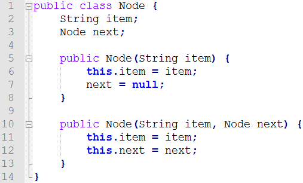
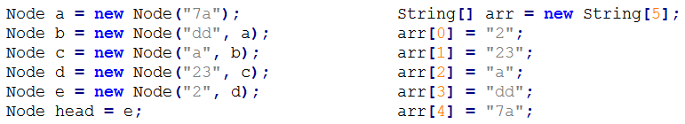
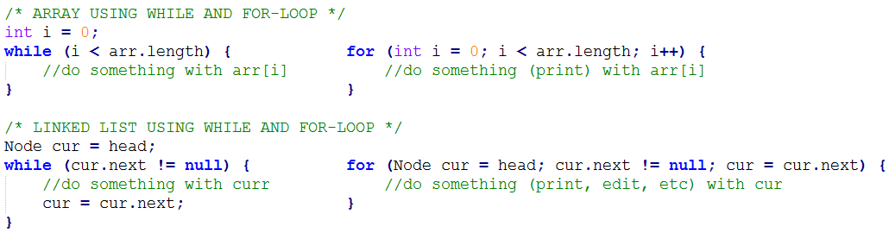

CSC 115 - Lab #2
Objectives
- The List Interface
- Linked Lists
- Assignment Overview
1. The List Interface
-
Interface??? What is an Interface?
-
What is the main objective of using an Interface?
-
Are they used in practice? Why?
-
The List Interface:
- add(item, index) --- adds the item to the list at the given position.
- get(index) --- accesses the item at the given position in the list.
- isEmpty() --- returns true if the list is empty, false otherwise.
- size() --- the number of items currently in the list.
- indexOf(item) --- returns the position of the given item in the list.
- remove(index) --- removes the item in the list at the given index.
- removeAll() --- empties the list.
- remove(item) --- removes all occurences of an item in the list.
- toString() --- the String (textual) representing of the list.
-
In some ways, BingoCalls was almost an implementation of the List interface
- Let's look at a sample solution to BingoCalls.java
-
Generics
- The List interface also uses something called generics
- From wikipedia: "They allow a type or method to operate on objects of various types.."
- Basically, this let's us create Lists to hold different types of things (BingoBalls, Strings, or other Objects)
List Exercise - Assume we are creating a List of BingoBalls
- What would our List look like after the following calls: add(B7, 0), add(O71, 0), add(B12, 1), add(I19, 3), add(B12, 0).
- What value would indexOf(B7) return? What about size()? isEmpty()? get(2)?
- What does the List look like after the call remove(1)? What about after remove(B12)?
2. Linked Lists
-
So far (in CSC110 at least ) we used arrays to store collections of data for us. A linked list is another way of representing a collection of data.
-
Linked Lists use Nodes. Here is what code to a Node that stores a String might look like:

- As you can see from the image, Nodes stores an item and have a link to another Node.
This allows a programmer to organize Nodes in a List quite easily.
- We now have two ways of representing items:

- Java code to create each representation looks like the following:

- We can do the same List operations regardless of whether List is implemented in an array or a linked list.
- For example, to loop through all of the elements in a list:

- One of the main objectives of CSC115 is get you to think about the reasons to choose a certain implementation.
- Let's assume we have a List of millions of elements..
- Which List functions would have different running times using an array vs. a linked list?
List Exercise
- Write a print method that prints all of the items in a Linked List.
- Write an add method that accepts a String and an index and inserts a Node (using the class shown above) into a List.
- Write a remove method that removes an item at a given index in a Linked List.
3. Assignment 2